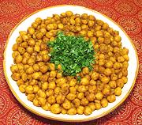

|
Spiced ChickpeasIndia - Kabuli Chana | ||||
| Makes: Effort: Sched: DoAhead: |
4 side ** 1-1/2 hrs Better |
An easy to make and very flavorful side dish suitable for both Indian and American menus. This is one of my favorite ways to prepare Chickpeas. | |||
|
1 2-1/2 1/2 ------ 1 1 1/2 1/2 1-1/2 1/2 ------ 1/2 1/8 2 1 ------ 1 |
c c T --- t t t t t t --- t t T T --- T |
Chickpeas (1) Water Salt (2) -- Spices Cumin seeds Coriander seeds Turmeric Chili Powder (2) Amchoor powder (3) Salt --------- Cumin seeds whole Asafoetida (4) Oil Lemon Juice -- Garnish -- Cilantro Green Chili, mild |
Do Ahead - (8-1/4 hrs - 15 minutes work)
|